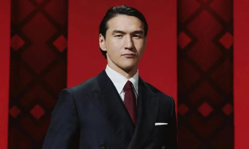
Нурлан Сабуров
Комик и телеведущий.
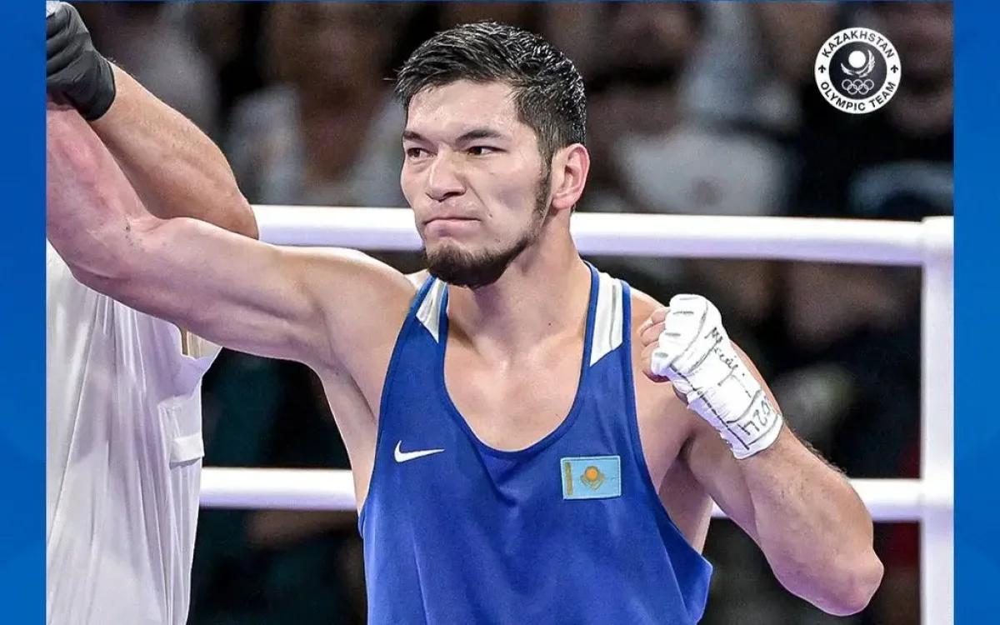
Нурбек Оралбай
Чемпион мира по боксу (2023).
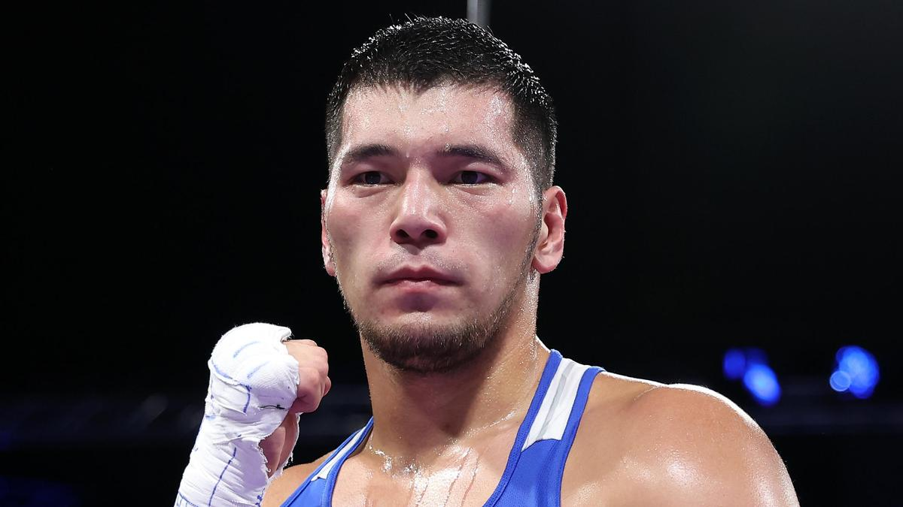
Айбек Оралбай
Чемпион Азии по боксу.
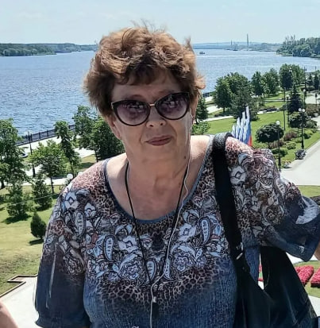
Наталья Тележинская
Исследователь истории региона.
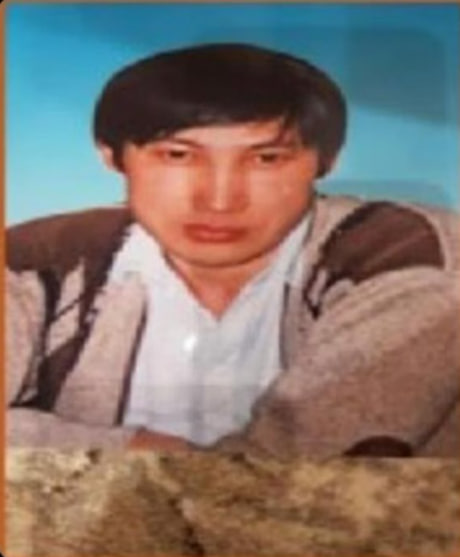
Марат Урстембаев
Директор музея, археолог.
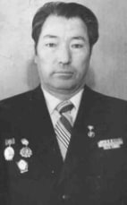
Алдангоров Шамиш Закирович
Ветеран и юрист.
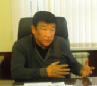
Асаубаев Канат Шайханович
Профессор, глава АО «Казахалтын».
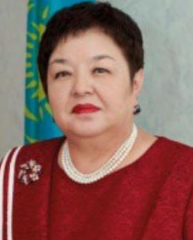
Булатова Капу Бактаевна
Заслуженный деятель города.
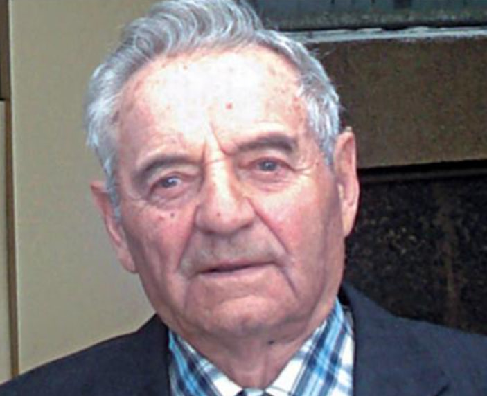
Гаврилятов Василий Константинович
Председатель Совета ветеранов.
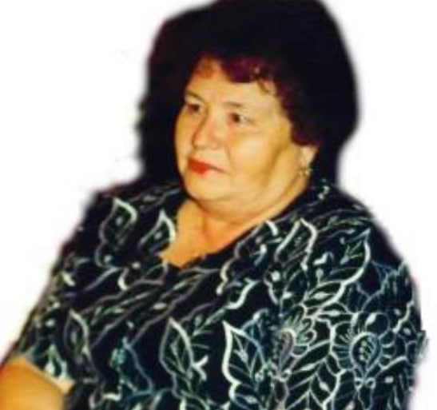
Гребнева Вера Николаевна
Руководитель отдела образования.
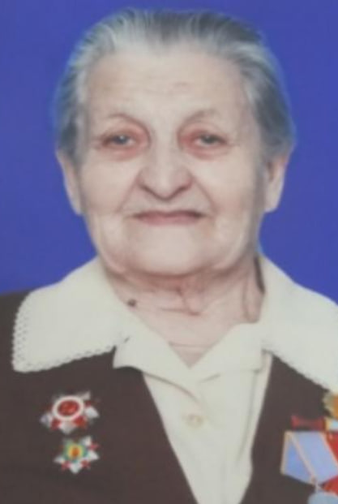
Дорош Клавдия Александровна
Ветеран ВОВ.
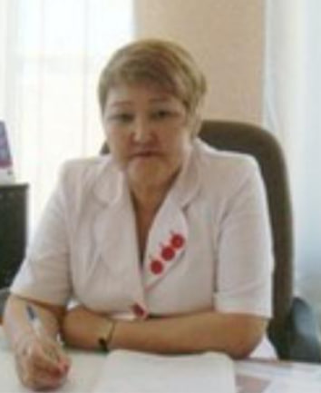
Есжанова Фарида Буташевна
Председатель совета ветеранов.
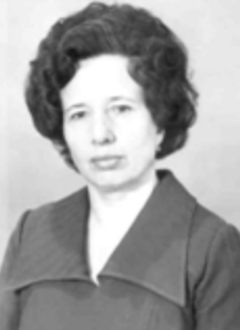
Зернова Александра Васильевна
Врач-стоматолог.
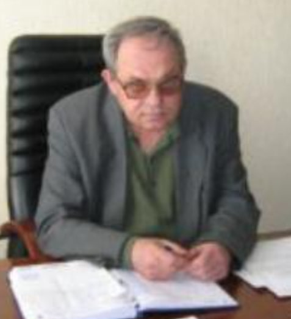
Зингер Виктор Иванович
Ветеран труда ЦГХК.
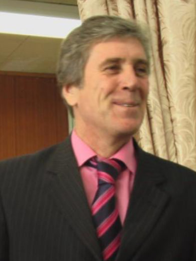
Ковцур Иван Павлович
Заслуженный деятель культуры.
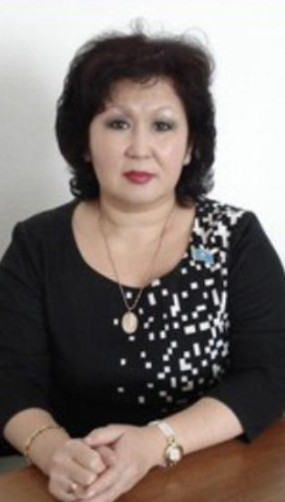
Копеева Гульмира Омирзаковна
Секретарь маслихата.
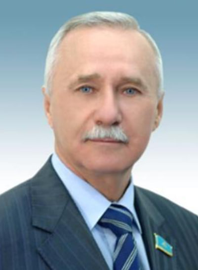
Котович Валерий Николаевич
Депутат Мажилиса РК.
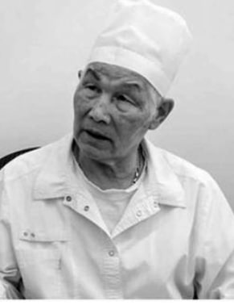
Махатов Канапия Кульмагамбетович
Врач-травматолог.
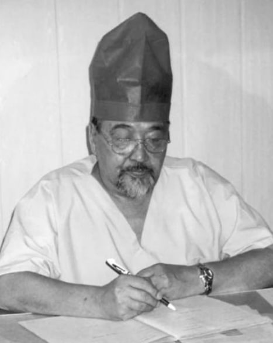
Молдагаипов Болатбек Амирбекович
Ветеран ОВД.
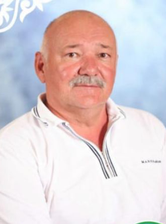
Мухамадиев Сапар Файзрахманович
Руководитель ОО «Ерлик».
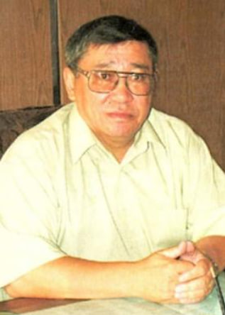
Мушанов Сарсембай Камалиденович
Почетный строитель.
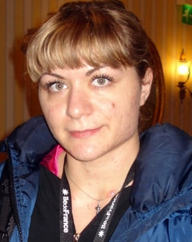
Некрасова Ирина Сергеевна
Заслуженный педагог.
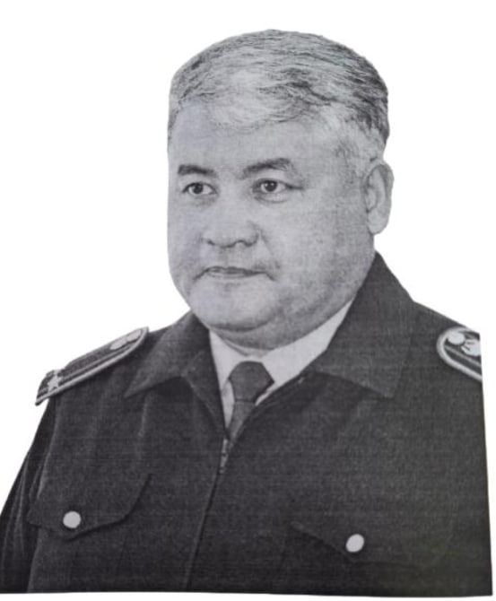
Омаров Жанбай Жумажанович
Глава хозяйства «Береке».
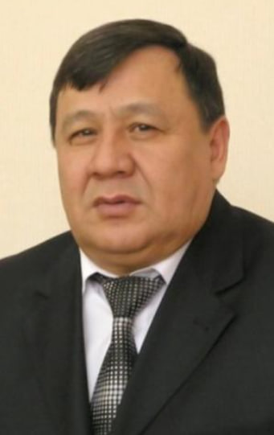
Пирматов Эшмурат Азимович
Общественный деятель.
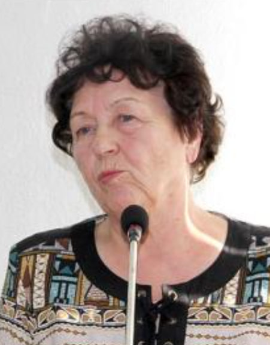
Рукавцова Нэлли Ильинична
Депутат маслихата.
Фотография
Сабит Куаныш Жумабаевич
Ветеран региона.
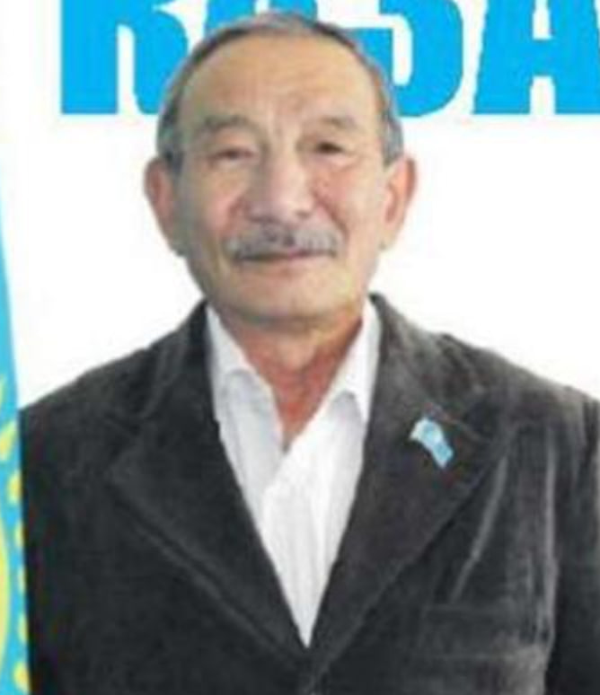
Сабыров Сапар Сабырович
Председатель Совета ветеранов Аксу.
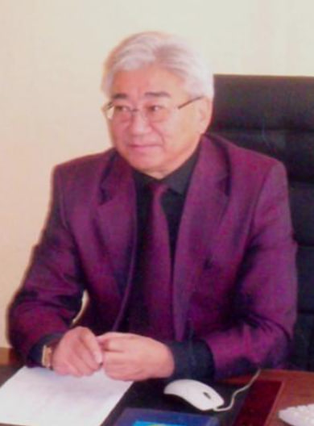
Сагадиев Болат Макежанович
Директор автотранспорта.
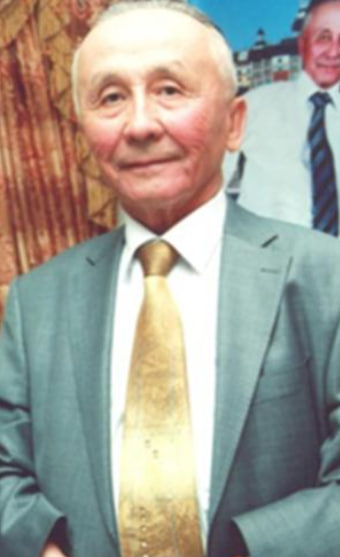
Сагиев Токтамыс Сералиевич
Ветеран производства.
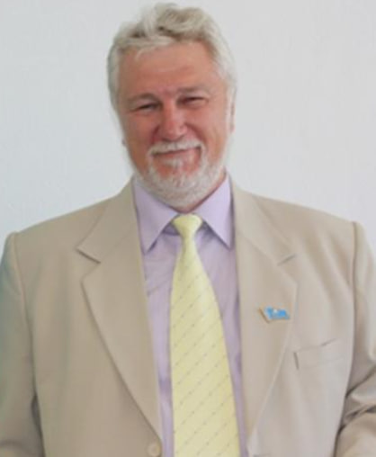
Смагин Алексей Петрович
Деятель маслихата.
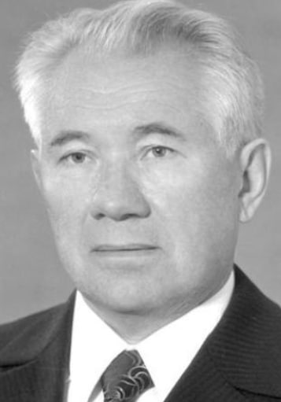
Смирнов Сергей Артемович
Первый директор комбината.
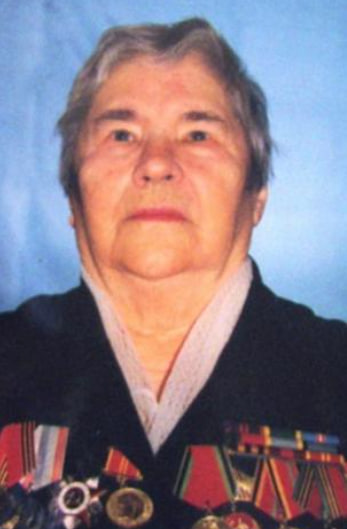
Смирнова Мария Степановна
Ветеран войны и труда.
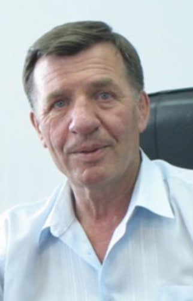
Томилов Анатолий Иванович
Руководитель ТЭЦ.
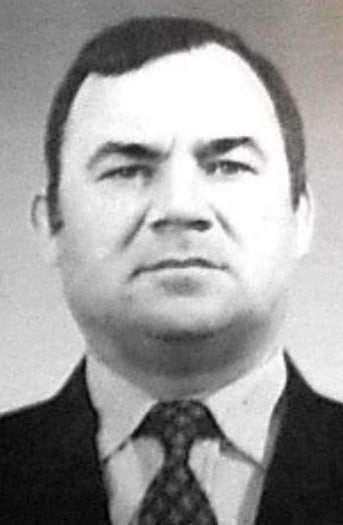
Тузов Владимир Иванович
Руководитель СУС.
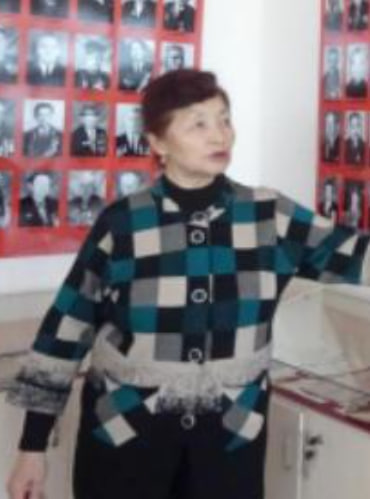
Утеуова Менуара Мухамедкаликызы
Активист ветеранов.
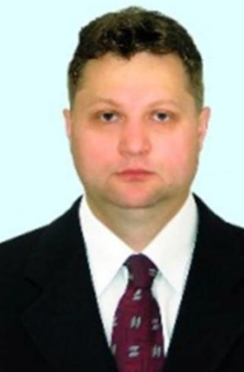
Шевченко Сергей П.
Промышленный деятель.

Эзау Виктор Абрамович
Заводской руководитель.
Фотография
Койшибаев Марат
Почетный гражданин.
Фотография
Посохова Любовь Николаевна
Заслуженный житель.